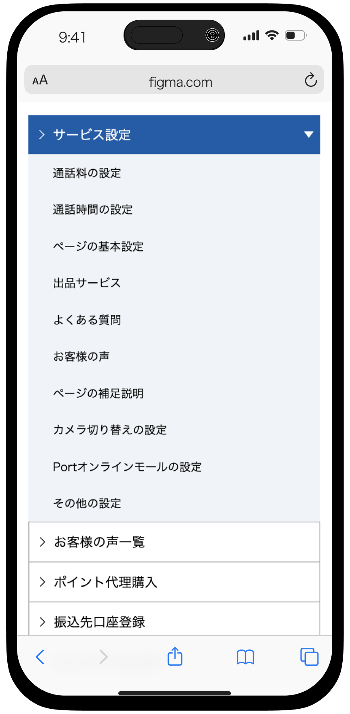

#homepage
before
メニューと内容が同じ画面にあるため、スペースの利用効率が非常に低くなっていた。
そのため、
「必須項目」をすべて確認するには一番下までスクロールする必要があり、Bユーザーには不便であった。

after
新規ユーザーに優しくなるため、メニューの構造をリデザインした。
「未完成」項目は一目瞭然以外、画面の下部に「アプリをダウンロードする」トーストバーを追加した。

#settings
before
サイドバーのような仕込みで操作には違和感がある上、全てのコンテンツを見ることができなかった。

after
構造はページングに替えた。
階層的に見やすくなり、ユーザーの操作困難を招くこともなくなる。

# detailed settings
階層的な設計を意識しながら、視覚化を強化してユーザー体験を向上させた。ここでは一部の例を示す。
・通話料設定
before

after

・カメラ設定
before

after